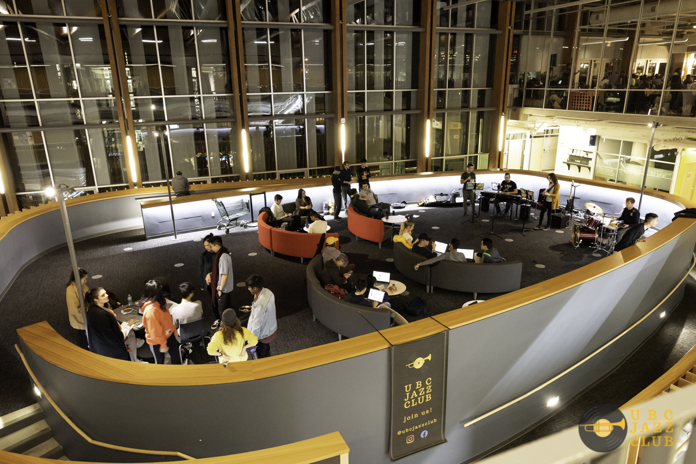
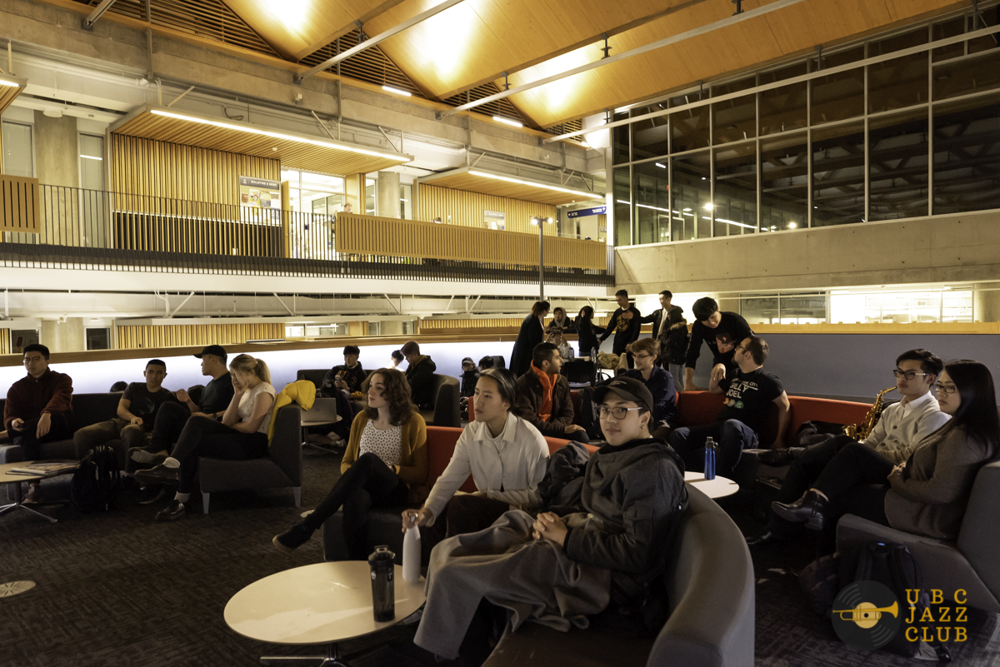

Our Flagship Events!
Casual Jams
Meant for musicians to collaborate with each other and listeners to enjoy; a weekly no-pressure environment where you can mingle with your fellow members, practice with other musicians and/or lounge for a couple hours.
Genre Nights

Know how to play an instrument but not in jazz? We got you. Genre nights focus on specific genres of jazz and the techniques associated. With the guidance of our veteran musicians you’re sure to get it down.
Concerts
At the end of every term, we like to feature the growth and talents of our musicians in a more formal setting. With snacks and social intermissions, it’s a great place to enjoy all the best things about Jazz Club: our engaged listeners and talented musicians.